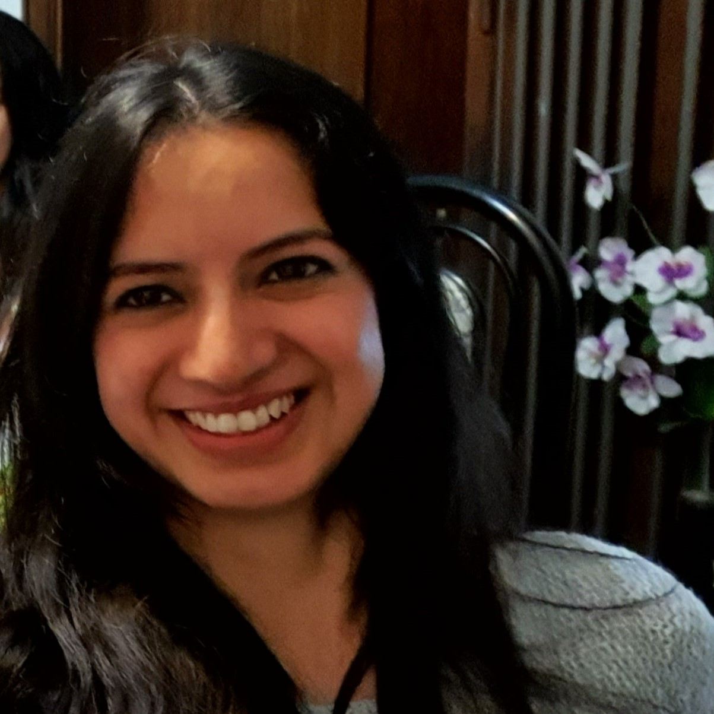

Silvina P.

Resumen
Me considero una persona proactiva, autodidacta, organizada y responsable.
Educación
- Ingeniería Electrónica (5°año) - Universidad Tecnológica Nacional - Facultad
Regional Buenos Aires (2005 - Presente)
- Técnico Electromecánico - Escuela Provincial de Educación Técnica Nº 12 (1998 - 2003)
Experiencia laboral
- Especialista en Seguridad Eléctrica de Productos Electromédicos y Productos de Laboratorio - Lenor S.R.L.
Marzo 2020 - Presente
- Realización de ensayos de desempeño y de seguridad eléctrica sobre productos electromédicos y productos de medición, control y uso en laboratorio bajo normas nacionales e internacionales (IEC, ISO, IRAM, UL, UNE-EN).
- Evaluación de documentación: de gestión de riesgos de acuerdo ISO 14971, de aplicación de ingeniería de usabilidad de acuerdo IEC 62366, IEC62366-1 e IEC 60601-1-6 y de Ciclo de vida de software de acuerdo a IEC 62304.
- Manejo de instrumental de laboratorio (Analizador de espectro, osciloscopio, simuladores de paciente, medidores multiparamétricos de seguridad eléctrica, etc).
- Interpretación de circuitos eléctricos.
- Emisión de reportes de seguridad eléctrica.
- Desarrollo de dispositivos.
- Atención al cliente.
Habilidades
- Inglés: ⭐️⭐️
- Lenguaje C: ⭐️⭐️⭐️⭐️⭐️
- Visual basic: ⭐️⭐️⭐️
- SQL:⭐️⭐️
- Arduino: ⭐️⭐️⭐️⭐️
- AutoCad: ⭐️⭐️⭐️
- Microsoft Office: ⭐️⭐️⭐️⭐️⭐️
- Html: ⭐️⭐️⭐️
Otros